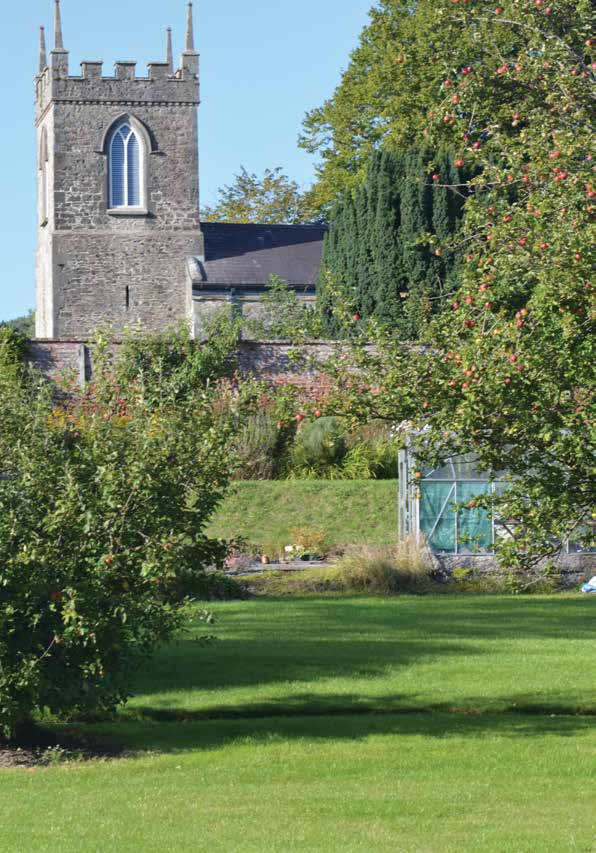

Beaulieu: Sounds Beautiful

SOLO is an afternoon of original song, presented in the intimate setting of Beaulieu House Chapel, and performed in the most intimate way possible - through unamplified solo performance.
Eugene Donegan, Dave Clark, SJ McArdle and Shaz Oye perform their collective repertoire encompassing folk, pop, blues and more; each has been selected to take full advantage of the chapel's unique, unamplified atmosphere - each is truly at a creative peak.
Monday 5 May
Venue: Beaulieu House & Garden
Times: 1 - 5pm Mon 5 May
Tickets: Free with ticket to Beaulieu